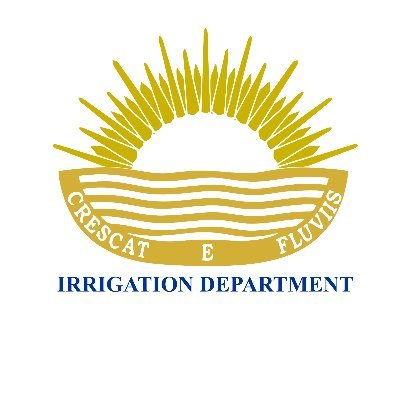

IRFAN NAZAR / WATER RESOURCES ENGINEER
Water shapes
our world.
I engineer
its future.
Connecting hydraulic engineering, digital intelligence, and field experience to build more resilient water systems.
Jhelum, Pakistan

managed
Grounded in the field.
Driven by possibility.

Punjab Irrigation Department
Executive Engineer, Small Dams Division, Jhelum
IHE Delft
MSc Water Science & Engineering — Hydroinformatics
UET Taxila
BSc Civil Engineering
I serve as Executive Engineer in the Small Dams Division, Jhelum, under the Punjab Irrigation Department, with professional experience in water resources, small dam projects, flood management, and public-sector engineering delivery since June 2014.
My professional focus sits at the intersection of traditional civil and hydraulic engineering (feasibility studies, dam safety inspections, EPAP review, PPRA procurement, and construction supervision) and modern hydroinformatics (hydrological models, GIS spatial layers, Google Earth Engine analytics, interactive dashboards, and Python automation).
My MSc at IHE Delft was completed on 11 April 2023 in Water Science and Engineering with specialisation in Hydroinformatics: Modelling and Information Systems for Water Management. The 106 ECTS programme included hydrology, hydraulics, information technology, computational hydraulics, river basin modelling, river flood analysis, flood risk management, decision support systems, and data visualisation.
Water Science & Engineering — Hydroinformatics
IHE Delft Institute for Water Education, Delft, Netherlands
Master of Science awarded 11 April 2023. Overall average 8.3/10 across 106 ECTS; thesis research, defence, and presentation: 8.0/10.
Civil Engineering
University of Engineering & Technology, Taxila, Pakistan
Professional Expertise
Public-sector engineering, planning, procurement, contract administration, water resources management, and day-to-day executive engineering delivery.
PC-I / PC-II / PC-IV / PC-V
Costing & Analysis
PPRA & Public Works Delivery
SAP & e-FOAS
Construction & Quality Delivery
Water Resources Operations
Division Management
Water Resources Expertise
Engineering in action.
Sample projects spanning dam safety, real-time flood warning, geospatial pipelines, and government TOR procurement.
AN INTERACTIVE EXPLORATION
A feel for
the flow.
Move the reservoir level and explore how water interacts with a dam and spillway.
Illustrative simulation, not live monitoring or an engineering design calculation.
Open channel designer ?Research, publications & recognition
Academic and professional work connecting hydroinformatics, Nature-Based Solutions, climate adaptation, and public-sector project delivery.
Nature-Based Solutions for Climate Adaptation
MSc thesis at IHE Delft investigated the effectiveness of Nature-Based Solutions for climate change adaptation in the Aa of Weerijs catchment, the Netherlands, with thesis research, defence, and presentation assessed at 8.0/10.
Conference Abstracts & Peer Review
Presented NBS and climate adaptation research at EGU General Assembly 2023 in Vienna and NCR Days 2023 in Nijmegen, with journal article work submitted for peer review.
Awards & Professional Training
Recipient of an ADB-funded scholarship for MSc study at IHE Delft, IHE fellowship support for advanced academic writing, EIFFEL H2020 conference funding, and LUMS Public Project Management training.
Technical reporting & documentation
Formal government reporting authored for inter-agency review and executive decision-making.
Let's build smarter water infrastructure.
Open for technical consultations, dam safety reviews, hydrological studies, GIS spatial pipelines, and hydroinformatics decision support builds.